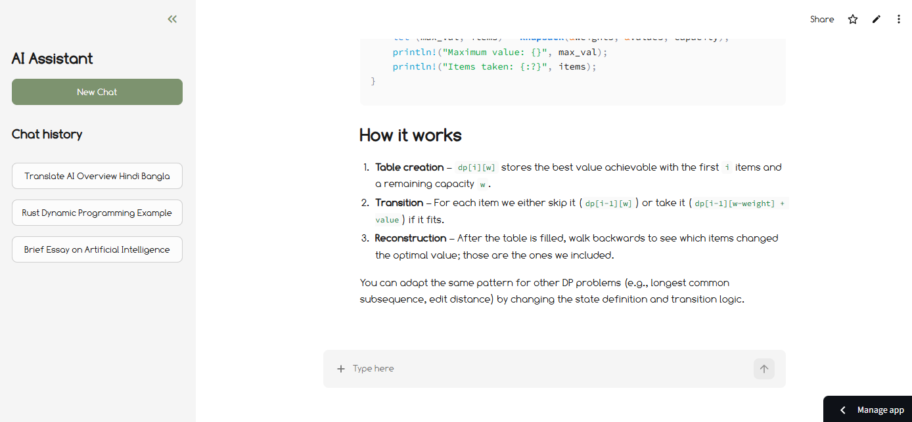

Personal AI Assistant with RAG
An agentic assistant with document retrieval and tool-use orchestration.
- Built an agentic AI assistant using LangGraph for stateful tool orchestration and workflow control.
- Engineered an end-to-end RAG pipeline with MMR retrieval, deduplication, and LLM-based relevance filtering.
- Implemented multi-model fallback routing with Pydantic-validated structured AI outputs for reliability.
- Built real-time token streaming with FastAPI SSE, including in-flight generation cancellation.
- Implemented UUID-based browser isolation to prevent cross-session document and knowledge-base mixing.